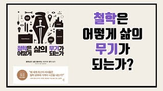

- 야마구치
- 한동철
- 이미예
11
자아실현을 이룬 사람일수록 인맥이 넓지 않다
자아실현적 인간
에브리러햄 매슬로
미국 심리학자, 인간의 욕구에는 단계가 있다면 '욕구 5단계설'로 잘 이루어져 있다.
정신 병리의 이해를 목적으로 의식을 분석하는 정신 분석과 객관적으로 관찰 가능한 행동을 중심으로
하는 행동주의 심리학 사이에 존재하는 '제 3의 세력' 으로서의 인본주의 심리학을 주장했다.
매슬로의 욕구 5단계설에 관해서는 이미 만흔 사람이 잘 알고 있을 것이다. 매슬로는 인간의 욕구를 다음 5단계 구조로 설명했다
- 1단계 : 생리적 욕구 Physiological needs
- 2단계 : 안전의 욕구 Safety needs
- 3단계 : 소속과 애정의 욕구 belonging & love needs.
- 4단계 : 존중의 욕구 esteem needs
- 5단계 : 자아실현의 욕구 self-actualization needs.
